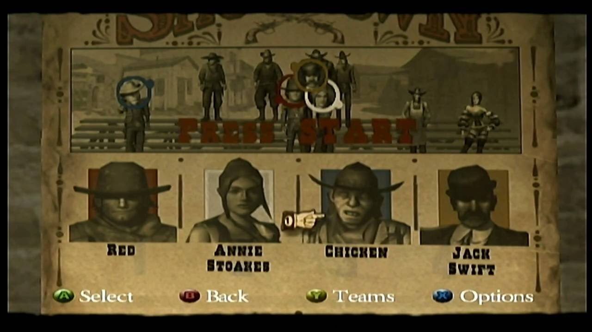

Red Dead Revolver — консольная игра в жанре приключенческого вестерн шутера от третьего лица, на консоли PlayStation 2 и Xbox в 2004 году.
В Японии игра была издана компанией Capcom в 2005 году.
В конце 2012 года стала доступна в PlayStation Store на PlayStation 3, а осенью 2016 года для PlayStation 4.
Завязка истории начинается в 1876 году. Нейт Харлоу и его партнер «Грифф» находят большое месторождение золота в районе под названием Гора Медведь.
Дабы отметить и увековечить это событие, Нейт и «Грифф» решают заказать каждому из них по уникальному револьверу с изображением скорпиона на рукоятках.
Далее их пути разошлись.
Через некоторое время, «Грифф» был захвачен мексиканскими военными и приговорен к расстрелу как шпион.
Он предлагает Генералу Хавьеру Диего половину золота, найденного на горе Медведь, и показать местоположение золотой жилы, если тот пощадит его жизнь.
Генерал соглашается, но позднее посылает свою «правую руку», Полковника Дарена, убить напарника «Гриффа» — Нэйта Харлоу и его семью.
Одиночная кампания Red Dead Revolver состоит из 27 сюжетных миссий. После прохождения каждой игроку отображаются экран с успехами и полученных наград за голову. Имеется четыре различных уровня сложности, но изначально доступен только легкий уровень. Для того чтобы разблокировать следующий уровень, нужно пройти игру на предыдущем:
«Normal Mode» (рус. Нормальный) — легкий уровень, доступен по умолчанию;
«Hard Mode» (рус. Высокий) — сложный уровень, доступен после прохождения игры на лёгком;
«Very Hard Mode» (рус. Очень высокий) — очень сложный, доступен после прохождения игры на обычном сложном уровне;
«Red Wood Revolver Mode» — доступный после прохождения игры на очень сложном. Модель игрока заменяется на деревянного манекена — персонажа Мэнни Куинн (англ. Manny Quinn).
«Dead Eye» (рус. «Меткий глаз», в переводе с англ. — «мертвый глаз») — способность главного героя, которая стала одной из отличительных геймплейных особенностей серии Red Dead. При прицеливании камера фокусируется на противнике, а время ненадолго замедляется (как при эффекте «Bullet Time»), это позволяет игроку за отведённый промежуток выбрать места на противнике и поставить там отметки, дабы точнее поразить его. Количество отметок зависит от объёма магазина. После возвращения времени в обычный ход главный герой выпускает шквал пуль из оружия во врага в те места и в той последовательности, в которой были поставлены маркеры.
В Red Dead Revolver имеется многопользовательский режим игры, называемый Showdown Mode (рус. Схватка). Он позволяет двум или четырём игрокам, на одной консоли при помощи «разделённого экрана» (англ. Split screen), сразиться на различных картах (всего 13 карт плюс одна эксклюзивная для Xbox) с возможностью выбора своего персонажа, разнообразие которых велико. С самого начала доступно только восемь персонажей, доступ к остальным 40 разблокируется после выполнения определённых испытаний. У каждого персонажа своё оружие и уникальные способности, которые можно активировать после череды убийств или определённого времени.
